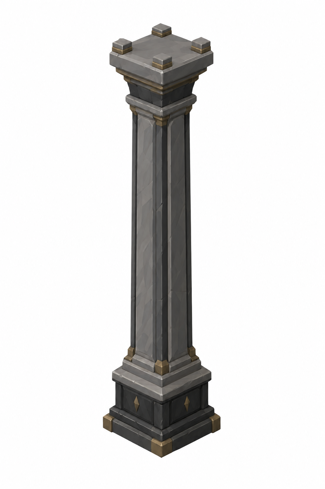
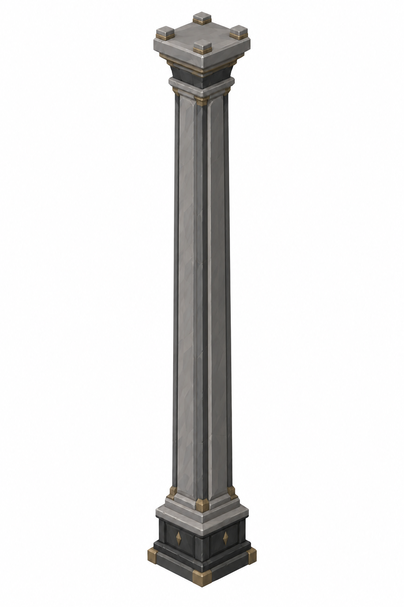
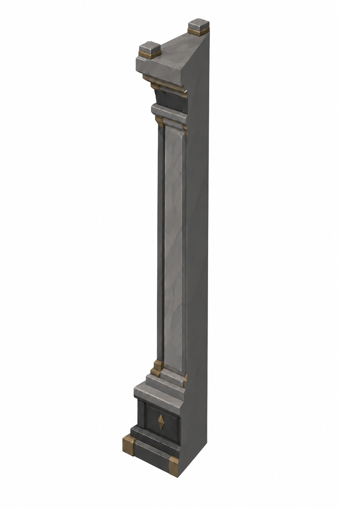
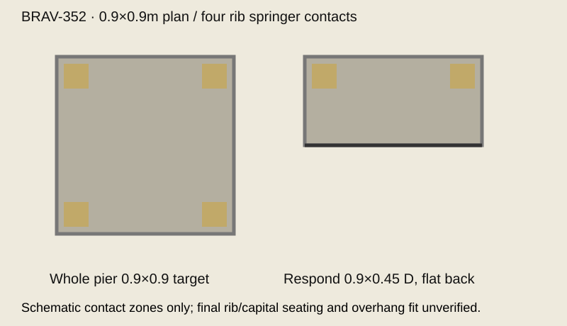

Yeni taslaklar: kullanıcı ve Mustafa görsel onayı bekleniyor. Tripo yok. Ölçüler kesin hedef; görsellerin oranları yaklaşık, mesh-fit doğrulanmadı.
Toplam yükseklik: kısa4.96m, uzun8.88m. Plan0.9×0.9m. Şematik öneri kaideH0.40P + başlıkH0.35P → shaft4.21 /8.13P, kesinleşmiş master ölçüleri değildir. Kaynak mesh toplam C=kaide+başlık ölçümü bekliyor; kesin formül short=4.96−C, tall=8.88−C; gövde farkı3.92m. Eski1.1mcapitaloverhang yeni0.9planhedefine uyarlanacak; finalrib-seatfitpending.



Orta gövdeyi3.92m uzat. Başlık+kaide iki varyantta eşboyut. Sarı bantlarP yükseklikleri gösterir; sonmeshölçüleri değildir.

İşaretler temas bölgesi şemasıdır. Vault scale1.1679; crown11.92/8.0 → springing8.88/4.96. Gerçek rib/capital oturuşu sonraki mesh QA.